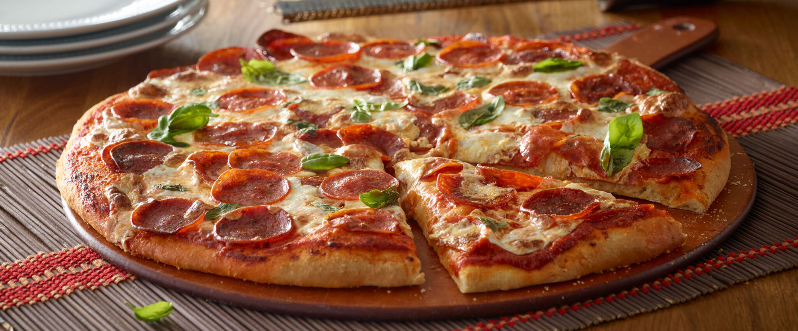

Back To Home
Pepperoni-Pizza

Delicious Pepperoni-Pizza
Pepperoni pizza is a classic favorite loved by pizza enthusiasts worldwide. Its perfect balance of savory pepperoni slices, gooey mozzarella cheese, and tangy tomato sauce creates a mouthwatering experience. Whether baked in a wood-fired oven or your kitchen oven, this pizza is a surefire way to please any crowd.
Ingredients
- Pizza dough (store-bought or homemade)
- 1 cup of pizza sauce
- 2 cups of shredded mozzarella cheese
- 20-25 slices of pepperoni
- 1 tablespoon of olive oil
- Optional: Fresh basil, grated Parmesan cheese, or chili flakes for garnish
Steps
- Roll out the pizza dough into your desired shape and thickness. Place it on a baking sheet or pizza stone.
- Evenly spread the pizza sauce over the dough, leaving a small border around the edges.
- Sprinkle the shredded mozzarella cheese over the sauce. Arrange the pepperoni slices on top of the cheese.
- Preheat your oven to 475°F (245°C). Bake the pizza for 10–15 minutes, or until the crust is golden brown and the cheese is bubbly.
- Remove the pizza from the oven and let it cool for a couple of minutes. Garnish with fresh basil, Parmesan, or chili flakes if desired. Slice and serve hot!